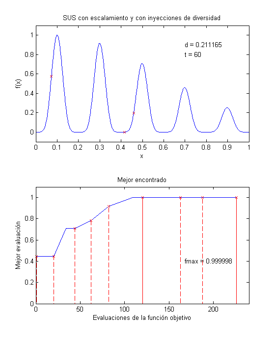

Reinicialización
Este ejemplo muestra el uso de los métodos convergence e injection para reinicializar un algoritmo genético mediante inyecciones de diversidad.
Contents
Un AG Simple sobre debf2
Optimizamos la función debf2 con un algoritmo genético de reales con un segmento de 30 bits, pm=0.01 y pc=0.9. Utilizamos un AG simple con selección proporcional (SUS) y lo corremos por 100 generaciones. La población converge al óptimo. En la segunda gráfica se muestran con líneas punteas los momentos en los que ocurre una inyección. Se puede notar que regularmente ocurren mejorías después de una inyección.
t = 0:0.001:1; rand('state',1); %1,3,5 produce resultados agradables fcn = @debf2; n = 4; p = population('real',[0 1],30,0.01,0.9); p = random(p,n); generaciones = 60; p = evaluate(p,fcn); best = get(p,'best'); B = [best.evals best.fitness]; d = convergence(p); Iny = B; for i=1:generaciones if d < 0.0001 % realizar inyección si se tiene diversidad menor a 0.1 p = injection(p,0.2,fcn); Iny = [Iny;best.evals best.fitness]; end p = scale(p); p = sus(p); p = crossover(p); p = mutation(p); p = evaluate(p,fcn); best = get(p,'best'); B = [B;best.evals best.fitness]; d = convergence(p); subplot(2,1,1) plot(t,debf2(t)) axis([0 1 -0.1 1.2]) title('SUS con escalamiento y con inyecciones de diversidad') xlabel('x') ylabel('f(x)') hold on subplot(2,1,1) plot(p); str1 = sprintf('t = %d',i); str2 = sprintf('d = %f',d); text(0.7,0.8,str1) text(0.7,0.9,str2) if d < 0.1 text(0.7,1.0,'inyección') end hold off subplot(2,1,2) plot(B(:,1),B(:,2)) axis([0 i*n 0 1.1]) str3 = sprintf('fmax = %f',best.fitness); text(i*n*0.70,0.4,str3) if length(Iny)>1 hold on subplot(2,1,2) stem(Iny(:,1),Iny(:,2),'xr--') title('Mejor encontrado') xlabel('Evaluaciones de la función objetivo') ylabel('Mejor evaluación') hold off end pause(0.05) end